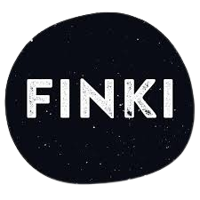
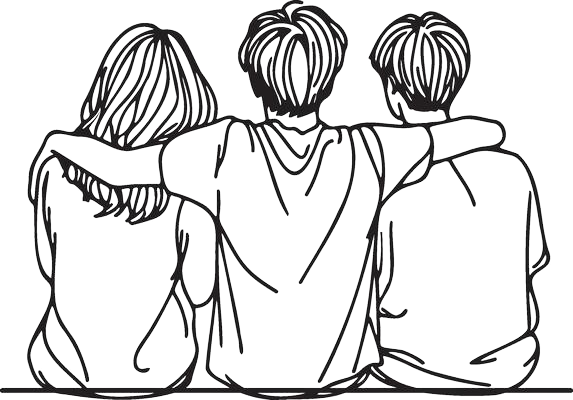
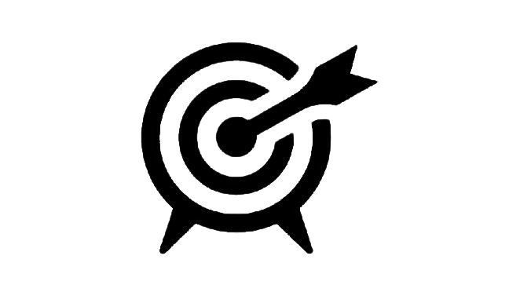

Hi there! I'm a 19-year-old student deeply passionate about programming and technology.
Currently,
I'm pursuing my studies in computer programming at FINKI, aiming to turn my fascination with coding into a
fulfilling
career.
From a young age, I've been captivated by how things work, and this curiosity naturally led me to the world
of
programming. I enjoy the process of solving complex problems and bringing creative ideas to life through
code.
My journey so far has allowed me to explore various programming languages and technologies, and I'm always
eager
to learn more and expand my skills.
In addition to my studies, I love working on personal projects, collaborating with peers on innovative
ideas,
and staying updated with the latest trends in the tech industry. When I'm not coding, you can find me
reading
tech blogs, playing video games, or tinkering with new gadgets.


I also value the importance of friendships in my life. True friends provide a sense of belonging and
emotional
support, enriching my experiences and helping me grow as a person. Whether it's sharing a laugh, offering a
listening ear, or tackling challenges together, friendships are a cornerstone of my life. They remind me
that
life is not just about individual achievements but also about the connections we build and the memories we
create with others.
I believe that the future of technology holds limitless possibilities, and I am excited to be a part of this
dynamic and ever-evolving field. My goal is to contribute to meaningful projects that make a positive impact
and
to continue growing as a programmer and problem solver.
Thank you for visiting my page, and feel free to connect with me if you share similar interests or have any
exciting opportunities to discuss!
